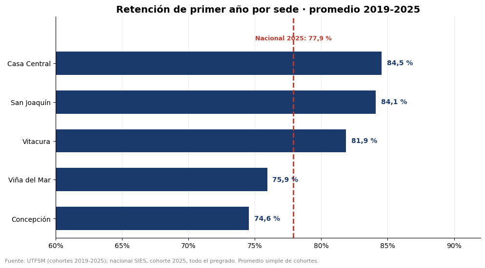
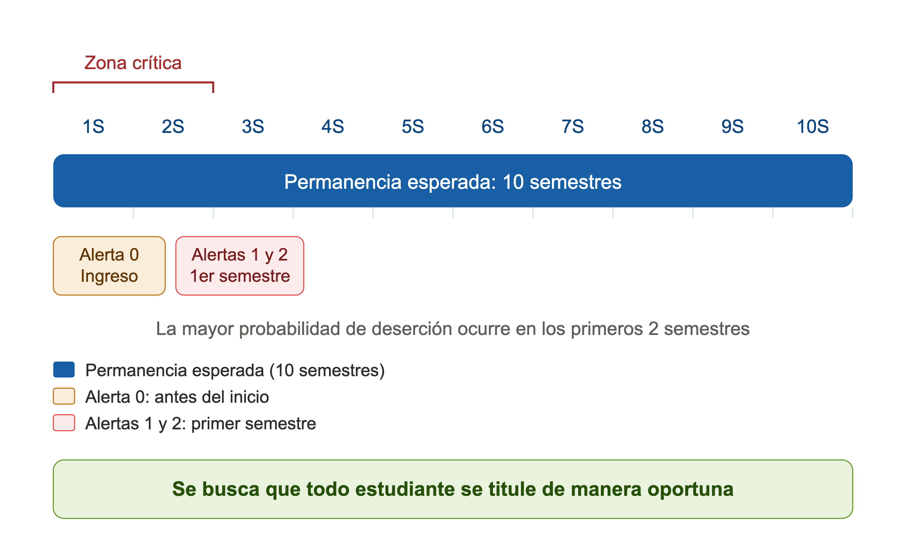
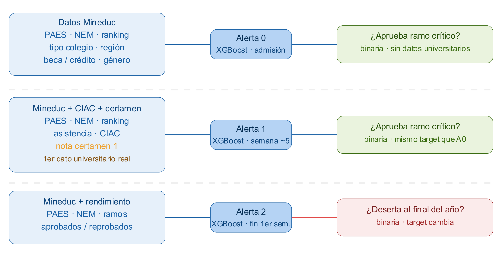
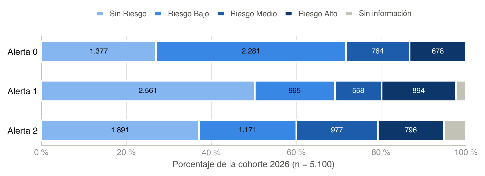
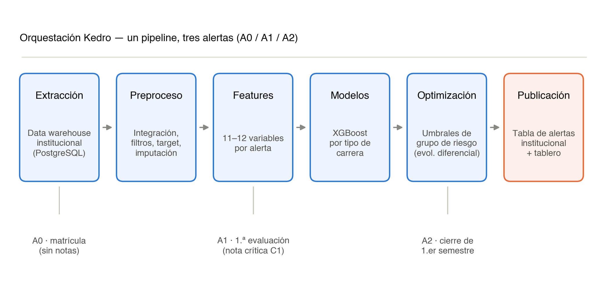
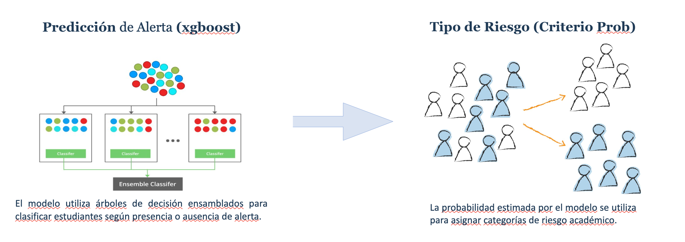
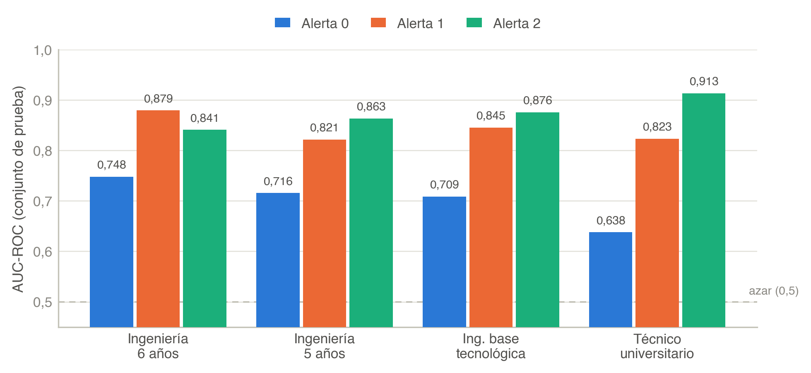
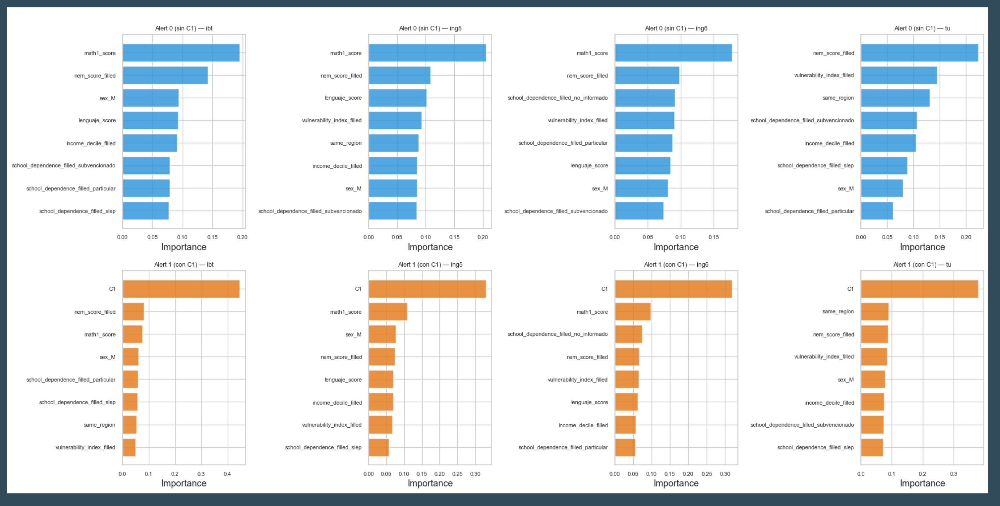
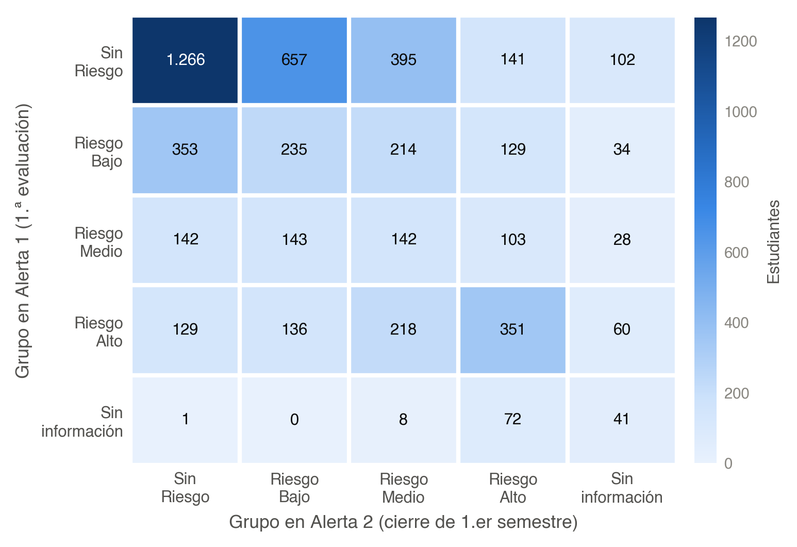
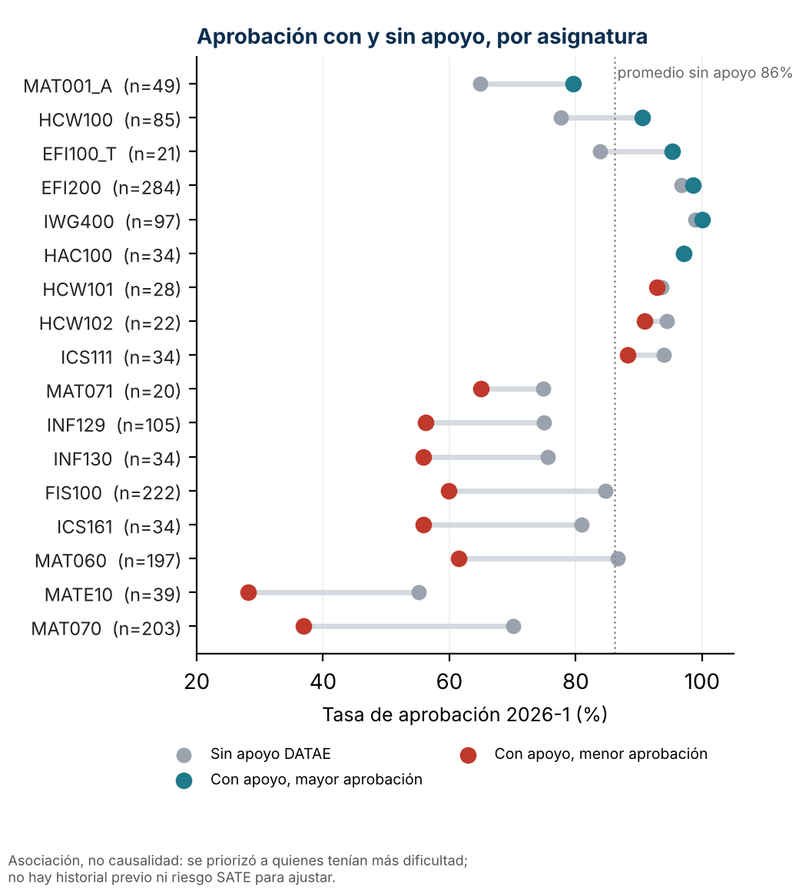

SAT-E: una cohorte, tres alertas, una prioridad que se actualiza
Pregunta de investigación
¿Cómo anticipar el riesgo académico sin convertir una probabilidad en un veredicto?
SAT-E integra datos de admisión y trayectoria para emitir alertas secuenciales sobre la misma cohorte. Cada alerta responde a la información disponible en un hito distinto del calendario.
Contribución La predicción se convierte en una lista priorizada y operable para equipos humanos de acompañamiento.
SOCHEDI 2026 · avance de investigación
El dato nuevo no reemplaza la alerta: la actualiza.
3alertas sobre
la misma cohorte
5.100estudiantes
cohorte 2026
81programas
en 5 campus y sedes
Tres alertas sobre la misma cohorte

Cohorte 2026 · la composición cambia con cada alerta

Cohorte 2026: n = 5.100. La categoría Sin información se mantiene visible.
A0 1.442
Riesgo medio + alto.
A1 894
Riesgo alto; 122 sin información.
A2 1.773
Riesgo medio + alto; 265 sin información.
Arquitectura · un pipeline, tres alertas


Resultados · la trayectoria mueve la señal

AUC-ROC en el conjunto de prueba por tipo de carrera. La línea discontinua representa azar (0,5).
Lectura principal A1 supera a A0 en los cuatro tipos de carrera; A2 alcanza el valor ponderado más alto, aunque predice no retención y no el mismo evento académico.
Apoyo · importancia de variables en A0 (sin C1)

Apoyo · importancia de variables en A1 (con C1)
Cohorte 2026 · transición entre A1 y A2

Cruce de grupos en la cohorte 2026. A1 y A2 predicen eventos diferentes.
2.035
permanecen en el mismo grupo: 39,9 %.
1.720
suben en severidad: 33,7 %.
1.345
bajan en severidad: 26,4 %.
Implicancia Seis de cada diez estudiantes cambian de grupo. Una alerta única congelaría demasiado pronto la prioridad de acompañamiento.
Impacto y cobertura
Indicadores DATAE
- Cobertura: estudiantes válidos con al menos una asistencia.
- Movilidad SATE: cambio de riesgo entre alertas.
- RAP y EC-RAP: rendimiento ponderado y su evolución.
- Retención: vigencia en el semestre siguiente.
- ACR y TAC: avance del plan y créditos aprobados.
Asociación, no causalidad.

Discusión · alcance y próximos pasos
Lo que muestra este avance
- La trayectoria temprana aporta más señal que el ingreso aislado.
- La secuencia actualiza la prioridad.
- Los umbrales producen grupos operables.
Lo que todavía no demuestra
- No estima impacto causal del acompañamiento.
- La validación interna no reemplaza la temporal.
- Debe monitorearse equidad y drift.
La siguiente evaluación
- Registrar contacto e intervención.
- Validar en cohortes posteriores.
- Evaluar lista de espera o diseño cuasiexperimental.
Conclusiones · mensaje final
Mensaje metodológico: las alertas son momentos de decisión y no etiquetas permanentes del estudiante.
CONCLUSIÓN
El valor de SAT-E está en conectar datos oportunos, modelos interpretables y capacidad real de acompañamiento.
Fuentes principales · gracias
Fuente base
Alfaro Medina, F., Canales Pozo, V. y Olivares, P. (2026). SAT-E: Sistema de alerta temprana multinivel para la detección de riesgo académico y deserción en estudiantes de primer año de ingeniería. Propuesta SOCHEDI 2026.
Referencias metodológicas
Tinto (1975, 1993); Siemens y Long (2011); Arnold y Pistilli (2012); Chen y Guestrin (2016); Lundberg y Lee (2017); Storn y Price (1997).
¿Preguntas?

SAT-E · SOCHEDI 2026 · Universidad Técnica Federico Santa María